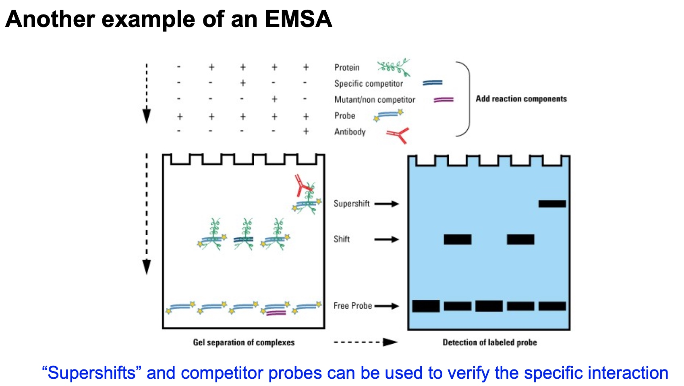

Poll everywhere
Question 1
Radiodurans = radiation endurance
Immunoflurescence is used to for location but not for content.
MS is powerful but we just want to measure one protein.
Northern blot is for amino acid.
Question 2
RecA is for DNA recombination for DNA repair. So after they finish fixing the DNA, their amount decrease.
The interaction between proteins or between proteins and nucleic acids are energetically favorable.
Question 3
Answer is D.
Question 4
Answer is C. D and E negatively charger. H and K positively charged.
Specific interaction with no matter major or minor grooves. Non-specific interaction with phosphate sugar backbone.
- Hydrogen bonding between alpha helix and minor groove. In the minor groove, the hydrogen bonding is symmetrical, but in the major bonding, it does matter.
- If we see interaction in the major groove, we may think it is specific interaction.
- We should not forget non-specific interactions like ionic interaction with negatively charged backbones or hydrogen bonding with the sugar.
- The yellow residue in the figure could be some sort of ion. Could be magnesium, could be calcium. Which are stablizing the structure of the protein through electrostatic interactions.
Techniques Measuring Interactions between Nucleic Acids and Proteins
Nucleic Acid- Protein Interactions
- EMSA/gel shift
- DNase footprinting
- chromatin immunoprecipitation (ChIP)
Protein-protein Interaction
- co-immunoprecipitation
- pull-downs
- yeast two-hybrid assays (will talk about in Unit 3)
Electrophoretic mobility shift assay (EMSA, or gel shift)
Tell if a protein bind to a nucleic acid sequence.
- Use a labeled piece of DNA
- Incubate with your protein of interest
- After non-denaturing gel electrophoresis of your samples, look for a complex that
migrates more slowly than the probe. This indicates binding.
Another Example of an EMSA
The competitor is not labeled, so we cannot see it.

DNase Footprinting
Focusing on the specific sequences.
- Incubate DNA + protein with DNaseI
- Separate the fragments by gel electrophoresis
- Compare to a sequencing ladder created by Sanger sequencing of the DNA fragment
- ‘Footprint’ = protected regions of DNA
An Example of DNase Footprinting
If we find the region, then we can use gel shift to confirm.
Chromain Immunoprecipitation(ChIP)
Can detect if a protein bind to a specific DNA sequence in living cells
- Use a chemical to covalently link protein and DNA • Isolate DNA and chop into small (~100-200 nt) fragments
- Immunoprecipitate the protein-DNA complexes with an antibody specific to protein of interest • Reverse crosslink and purify the DNA
- Analyze the DNA by PCR, microarray, or next-generation sequencing
Communoprecipitation assay
The principle is like ChIP.
Is used when we want to know what proteins bind to a specific protein of interest.
- Gently isolate proteins
- Precipitate your protein with bead-bound antibodies that recognize it
- Other interacting proteins stay associated with the beads
- Wash away non-interacting proteins
- Elute your protein + interacting protein from beads
- Identify the other proteins (western blotting, mass spectrometry)

Using Epitope Tags in "Pull-down" Experiments
- Immunoprecipitation using an antibody that recognizes a tag on a protein (GST, FLAG, Myc, HA)
- Identify the other proteins (this slide shows the use of mass spectrometry)